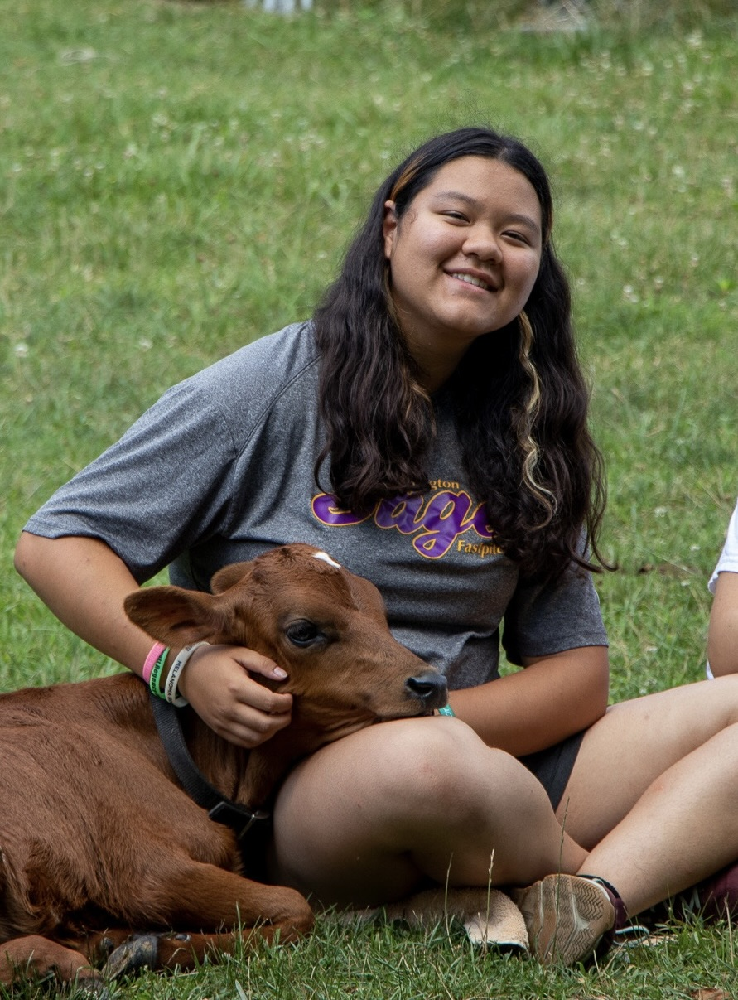

- Being able to think hypothetically - Forming and testing hypotheses - Organize information - Reason scientifically
Erikson's Theory:
Identity and role is formed through this age gap

Years 12-18
Thinks more abstractly
Considers the future
More reliant of the opinons of others
Develops their own beliefs and opinions
Begins showing interest in romantic relationships
Spends more time with their screens
Learn how to balance school and other interests
More interested in forming deeper connections with others
Has a few close friends
This is the main time the brain develops
Is more interested in exploring
Main interests are defined in this period
Begins driving🚘
White space
This was the age when I learned about photography and began doing that more. I also learned that my favorite subject was science!
White space
Erikson's Theory: Identity and Role (Years 12-18)
- The time to figure out who you are and gain self-identity - This allows you to face adulthood with confidence - This is the stage when they learn fidelity